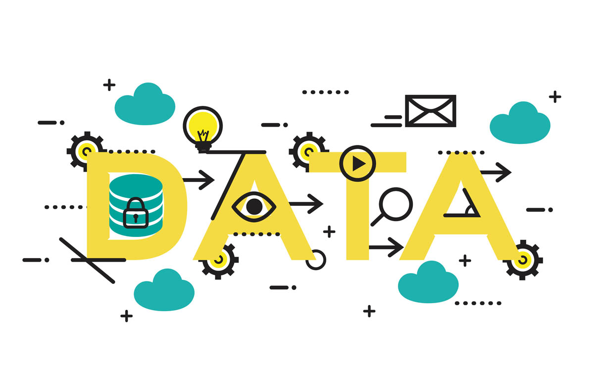

Kinh doanh là một lĩnh vực có tính cạnh tranh cao đòi hỏi người kinh doanh phải thường xuyên cập nhật xu hướng và thị hiếu của người tiêu dùng. Cùng với sự phát triển của digital marketing, thuật ngữ Data driven cũng trở nên phổ biến và được các doanh nghiệp ứng dụng trong hoạch định chiến lược. Vậy data driven là gì và tầm quan trọng của data driven như thế nào trong chiến lược kinh doanh?
Data driven là một thuật ngữ tiếng Anh, được dịch nghĩa là điều khiển bằng dữ liệu, thuật ngữ này thường được dùng trong lĩnh vực kinh doanh và tiếp thị. Data driven tức là phương thức kinh doanh dựa trên cơ sở dữ liệu thu thập và phân tích được. Có thể nói, trong thời đại công nghệ 4.0 với sự phát triển của digital marketing, phân tích dữ liệu giờ đây đã thành một phần cơ bản của chiến lược quảng cáo và kinh doanh.
Các dữ liệu này bao gồm thông tin, tương tác và hành vi mua hàng của khách hàng, việc phân tích dữ liệu sẽ dự đoán được hành vi mua sắm của khách hàng trong tương lai.Data driven bao gồm sử dụng dữ liệu sẵn có, thu thập dữ liệu, phân tích, xử lý dữ liệu và áp dụng dữ liệu đó cho chiến lược quảng cáo, tiếp thị và kinh doanh của bạn.
Sự xuất hiện của phần mềm quản lý khách hàng (CRM)
Data driven xuất phát từ việc phát minh ra phần mềm quản lý quan hệ khách hàng (CRM) cho phép các nhà tiếp thị theo dõi khách hàng cá nhân bao gồm tên và thông tin liên hệ.
CRM cho phép gửi thư trực tiếp đến khách hàng và do đó nhà tiếp thị có thể thực hiện các chiến dịch tiếp thị trực tiếp bằng cách gửi các loại tin nhắn khác nhau đến từng phân khúc khách hàng khác nhau.

Thời đại tự động hóa tiếp thị thông qua đám mây
CRM đã đạt được một bước tiến mới trong thời đại tiếp thị kỹ thuật số với sự đổi mới của Salesforce khi kết nối nền tảng này với đám mây.
Tiếp thị dựa trên dữ liệu kỹ thuật số ra đời khi CRM khai sinh ra phần mềm tự động hóa tiếp thị. Hồ sơ tiếp thị cá nhân được xây dựng dựa trên việc theo dõi tương tác của khách hàng trên trang web và email. Từ đó, các email được gửi tự động dựa trên kết quả chấm điểm khách hàng tiềm năng trên từng phân khúc.
Thời đại của marketing dựa trên nền tảng quản lý dữ liệu (data-driven)
Khi các nhà tiếp thị bắt đầu tiến hành phân khúc khách hàng bằng cách sử dụng dữ liệu tiếp thị, họ gặp phải một vấn đề mới xung quanh lượng dữ liệu về người dùng được theo dõi đang được tích lũy.
Khách hàng giờ đây không chỉ tiếp cận và tương tác với các chương trình tiếp thị thông qua website và email của công ty mà còn tiếp cận thông qua các phương tiện truyền thông khác nơi mà nhà tiếp thị đang đặt quảng cáo, gọi là quảng cáo thuật toán. Các giải pháp ví dụ như Krux và Neustar đã ra đời để giúp các nhà tiếp thị tổng hợp dữ liệu theo cách dễ quản lý hơn và tạo ra những hiểu biết về thị trường, khách hàng nhằm hoạch định các chính sách và chiến lược tiếp thị mới.
Từ đó, bắt đầu thời đại của nền tảng quản lý dữ liệu và data-driven.
Cả doanh nghiệp và người tiêu dùng đều được hưởng lợi từ việc tiếp cận dữ liệu để tiếp thị. Khi các chiến lược được thực hiện thành công, những lợi ích đó bao gồm:
Kỷ nguyên của ngành phân tích dữ liệu lớn (big data)
Tiếp thị đa kênh cần một lượng dữ liệu khổng lồ làm cơ sở cho việc ra quyết định và hoạch định chiến lược. Việc tiếp cận, thu thập và phân tích lượng dữ liệu này dường như nằm ngoài tầm tay của các nhà tiếp thị. Chính vì vậy, họ cần một bên thứ 3 để cung cấp giải pháp tối ưu cho việc xử lý và phân tích dữ liệu này. Tiếp thị đa kênh đã hình thành nên một đế chế về data analytics mạnh mẽ. Bằng chứng rõ ràng nhất chính là việc các ông lớn về công nghệ đã lần lượt thâu tóm các giải pháp phân tích dữ liệu trong năm 2019, như thương vụ Google mua lại Looker analytics với giá 2.6 tỷ USD, và Salesforce mua lại Tableau với giá 15.7 tỷ USD thông qua hoán đổi cổ phần.
Tự động hóa thu thập và phân tích dữ liệu
Phần mềm thu thập dữ liệu tự động thu thập và sàng lọc nội dung, hành vi và hành động của khách hàng để cung cấp cho bạn thông tin chuyên sâu về khách hàng tiềm năng và các xu hướng về thị trường. Nó giúp bạn có hiểu biết tốt hơn về khách hàng, từ đó thiết kế các chiến dịch tiếp thị tốt hơn.
Analytics cũng có thể giúp bạn thấy được mức độ thành công của các chiến dịch của mình trong thời gian thực. Bạn có thể biết được có bao nhiêu người đang click chuột vào nội dung của bạn, thời gian họ ở lại và kênh nào có nhiều lưu lượng truy cập nhất. Bạn cũng có thể tìm hiểu nhóm khách hàng nào phản hồi chiến dịch của bạn nhiều nhất, giúp bạn khám phá phân khúc khách hàng mà bạn nên tập trung vào.
Tự động hóa tiếp thị
“Tự động hóa tiếp thị phát triển trên nền tảng quản lý quan hệ khách hàng (CRM) và quản lý trải nghiệm khách hàng (CXM) tập trung vào các mô tả, phân khúc, lên kế hoạch, thực hiện và theo dõi các chiến dịch tiếp thị. Tự động hóa tiếp thị tức là quá trình lặp đi lặp lại các nhiệm vụ tiếp thị nêu trên một cách tự động trong suốt chiến dịch tiếp thị.
Một ví dụ cho tự động hóa tiếp thị chính là việc Doanh nghiệp đã ứng dụng tự động hóa tiếp thị như thế nào trong việc tạo ra tăng trưởng cho doanh nghiệp mình:
Grab là một ứng dụng gọi xe phổ biến ở Việt Nam, và mặc dù mảng gọi xe công nghệ có sự cạnh tranh rất lớn khi có sự tham gia của các công ty lớn nhỏ như Go-Việt, Be, My Go…nhưng Grab vẫn là ứng dụng hàng đầu nhờ ứng dụng Data Analytics và tự động hóa tiếp thị trong chiến lược kinh doanh của mình. Giải pháp này được cung cấp bởi một startup của Việt Nam có tên là Holistics.
Qua bài viết này, chúng ta đã tìm hiểu được data driven là gì và xu hướng data driven marketing trong giai đoạn hiện nay. Có thể nói, hình thức quảng cáo hàng loạt trên website và các phương tiện truyền thông đã trở nên bão hòa. Đã đến lúc marketing hướng tới tối ưu hóa trải nghiệm của khách hàng theo lối tiếp thị cá nhân. Đây chính là giải pháp nâng cao hiệu quả cạnh tranh và tăng trưởng doanh số của các doanh nghiệp trong thời gian tới.
Nguồn: jobpro.vn
Uyên
Tuyệt vời!!! Một bài viết xuất sắc!!!
Reply
Linh Thuy Tran
Thật là một bài viết hữu ích.
Reply